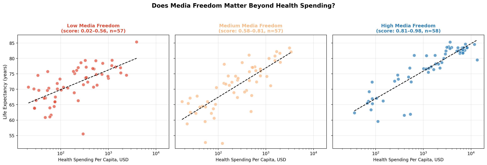
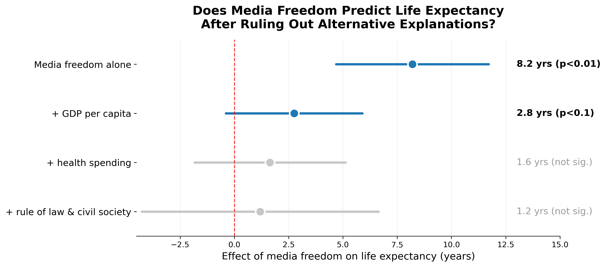
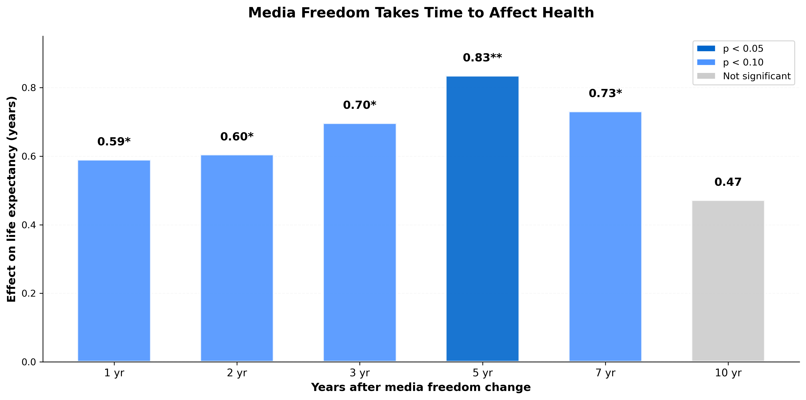
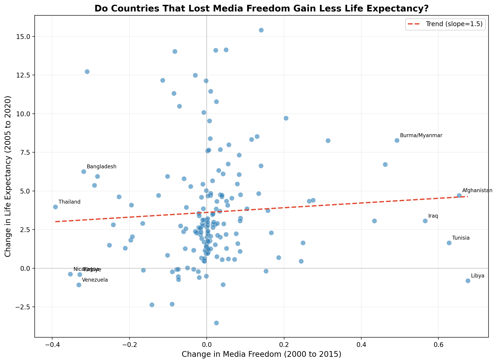
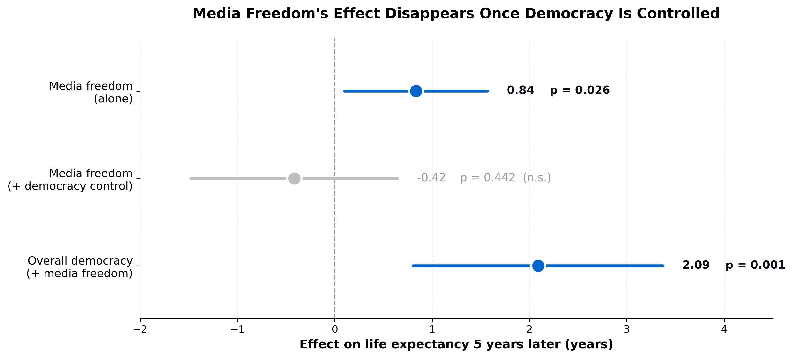
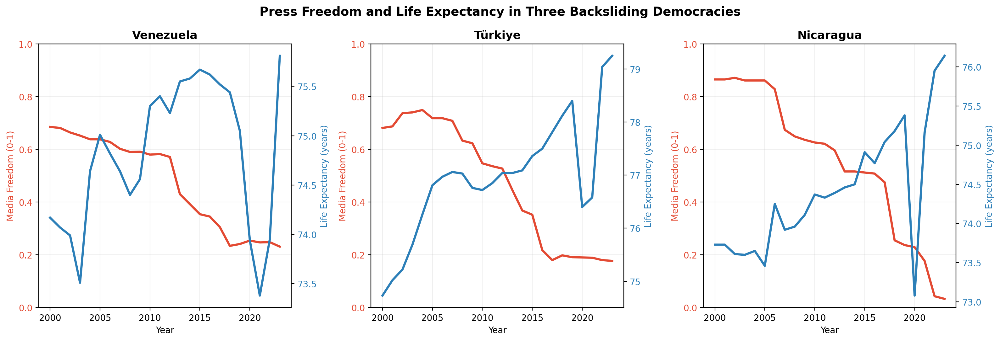
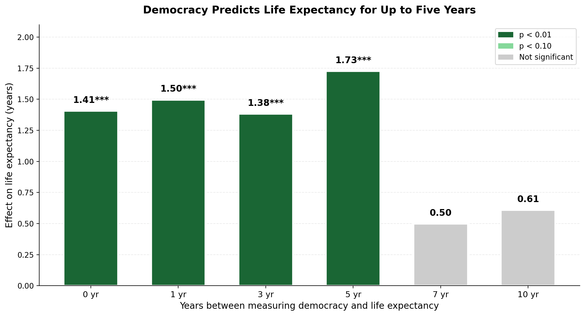

The Question
Countries with free press tend to live longer. But is that because media freedom itself improves health, or because press freedom travels with other things, like wealth and democracy, that improve health?
Does media freedom independently predict population health, or is the apparent relationship explained by wealth and broader democratic governance?
A free press could plausibly improve health by holding governments accountable, exposing corruption, and spreading public health information. This project starts with a striking raw correlation and then stress-tests it step by step. The conclusion is not the one I expected: once wealth and overall democracy are accounted for, press freedom's independent effect disappears. Press freedom turns out to be a marker of healthy governance, not a separate cause of population health.
Data
Two major cross-national datasets were merged at the country-year level and cleaned to a balanced panel suitable for fixed-effects regression.
Media freedom, journalist harassment indices
Life expectancy, health expenditure, GDP per capita
Findings
The 8.2-year gap is mostly driven by wealth
8.2 yr raw gap Wealth confoundedIn a simple cross-country comparison, countries with the most media freedom live 8.2 years longer on average than countries with the least. That's a striking number. The tempting conclusion writes itself: a free press must be saving lives, so the press deserves the credit.
But that conclusion is too quick. The descriptive plot below offers a first hint of why. It splits countries into low, medium, and high media freedom groups, and within each group plots health spending against life expectancy. In all three groups, life expectancy rises strongly with health spending, and the panels look broadly similar to one another.
That pattern suggests the raw 8.2-year gap may partly reflect the fact that freer countries are also wealthier and spend more on health, rather than press freedom itself. This is only suggestive. The formal test comes in Finding 02, where adding wealth as a control directly shrinks the media freedom effect.

The effect of media freedom shrinks as controls are added
8.2 to 1.1 years ConfoundingFour regression models were run, each adding another factor to account for. The media freedom effect drops from 8.2 years to just 1.1 years (and is no longer statistically significant) once wealth and health spending are included.
This confirms the pattern from the scatter plots: the raw association between media freedom and life expectancy is largely explained by wealth. To find out whether media freedom has any independent effect, we need a more rigorous approach.

Tracking countries over time, a weak lagged signal appears
p = 0.026 5-year lag FragileInstead of comparing different countries to each other, this analysis tracks changes within the same country over time, controlling for everything that stays constant about a country. Here a signal appears: media freedom is associated with higher life expectancy about five years later (p = 0.026), and it survives a GDP control.
But this signal is fragile. A simple plot of the change in media freedom against the change in life expectancy across countries shows almost no relationship (correlation = 0.07). Life expectancy has risen almost everywhere regardless of press freedom, so any effect is modest and easily swamped by other factors.
This raised an obvious question: is this weak signal real, or is media freedom standing in for something larger? Finding 04 puts it to the test.


The signal disappears once we control for overall democracy
Effect vanishes p = 0.44The decisive test: add a measure of overall democracy to the model and see whether press freedom still matters. It does not.
On its own, the lagged media freedom effect was 0.84 (p = 0.026). But once overall democracy is included, media freedom drops to −0.42 and becomes insignificant (p = 0.44), while overall democracy is a strong predictor (p = 0.001). Press freedom adds nothing once you know how democratic a country is.
Case studies tell the same story. Turkey's press freedom collapsed from 0.68 to 0.19, yet its life expectancy rose by 1.7 years. Venezuela and Nicaragua saw press freedom collapse alongside stagnating health, but this is consistent with broad authoritarian decline affecting everything at once, not press freedom acting alone.
Note: because media freedom is itself a component of the democracy index, the two are partly collinear by construction. That is precisely the point. Press freedom is empirically inseparable from the broader democratic package that predicts health.


Democracy holds up where press freedom did not
p < 0.001 RobustIf press freedom was a proxy, what is the real correlate? Overall democracy. Unlike press freedom, democracy significantly predicts life expectancy at every lag from 0 to 5 years, and the effect barely moves when wealth, rule of law, and control of corruption are all added as controls (1.76 to 1.49, p = 0.001).
That is the key contrast. Press freedom collapsed the moment democracy entered the model. Democracy survives a far harsher set of controls. Going from full autocracy to full democracy is associated with roughly 1.5 more years of life expectancy, within countries over time.
This is still observational, so it shows association rather than proof of cause. Democracy travels with education, state capacity, and healthcare infrastructure, which this design cannot fully separate. But the finding is robust where the press freedom finding was fragile.

Explore the Data
Toggle between media freedom, life expectancy, censorship, and civil society scores across 173 countries.
🌍 Open Interactive MapThe free press gets the credit, but democracy does the work.
The headline correlation is striking: countries with free press live about 8 years longer. But it does not survive scrutiny. Most of the gap is wealth, and the weak signal that remains disappears once overall democracy is taken into account. Press freedom turns out to be a marker, not a mechanism. What does hold up is democracy itself: democratic governance robustly predicts life expectancy, even after controlling for wealth, rule of law, and corruption. The lesson is that population health tracks with the whole democratic package, not with press freedom as an isolated lever.